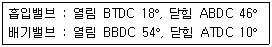
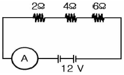

자동차정비기능사 (2013-04-14 기출문제)
1과목: 자동차공학
1. 자동차 전조등 주광축의 진폭 측정시 10m 위치에서 우측 우향 진폭 기준은 몇 cm 이내 이어야 하는가?
- 10
- 20
- 30
- 39
(정답률: 64%)

2. 어떤 기관의 열효율을 측정하는데 열정산에서 냉각에 의한 손실이 29%, 배기와 복사에 의한 손실이 31% 이고, 기계효율을 80% 라면 정미열효율은?
- 40%
- 36%
- 34%
- 32%
(정답률: 43%)
3. 크랭크축 메인 저어널 베어링 마모를 점검하는 방법은?
- 파일러 게이지 방법
- 시임(seam)방법
- 직각자방법
- 플라스틱 게이지 방법
(정답률: 82%)
4. 차량용 엔진의 엔진성능에 영향을 미치는 여러 인자에 대한 설명으로 옳은 것은?
- 흡입효율, 체적효율, 충전효율이 있다.
- 압축비는 기관의 성능에 영향을 미치지 못한다.
- 점화시기는 기관의 특성에 영향을 미치지 못한다.
- 냉각수온도, 마찰은 제외한다.
(정답률: 86%)
5. 디젤기관에서 전자제어식 고압펌프의 특징이 아닌 것은?
- 동력성능의 향상
- 쾌적성 향상
- 부가 장치가 필요
- 가속 시 스모크 저감
(정답률: 60%)
6. 실린더가 정상적인 마모를 할 때 마모량이 가장 큰 부분은?
- 실린더 윗부분
- 실린더 중간 부분
- 실린더 밑 부분
- 실린더 헤드
(정답률: 75%)
7. 전자제어가솔린 연료분사 방식의 특징이 아닌 것은?
- 기관의 응답 및 주행성 향상
- 기관 출력의 향상
- CO, HC 등의 배출가스 감소
- 간단한 구조
(정답률: 73%)
8. 디젤엔진에서 플런저의 유효 행정을 크게 하였을 때 일어나는 것은?
- 송출 압력이 커진다.
- 송출압력이 적어진다.
- 연료 송출량이 많아진다.
- 연료 송출량이 적어진다.
(정답률: 61%)
9. 고속 디젤기관의 열역학적 사이클은 어느 것에 해당 하는가?
- 오토 사이클
- 디젤 사이클
- 정적 사이클
- 복합 사이클
(정답률: 71%)
10. 연료 1kg을 연소시키는데 드는 이론적 공기량과 실제로 드는 공기량과의 비를 무엇이라고 하는가?
- 중량비
- 공기율
- 중량도
- 공기 과잉율
(정답률: 71%)
11. LPG 기관에서 믹서의 스로틀 밸브 개도량을 감지하여 ECU에 신호를 보내는 것은?
- 아이들 업 솔레노이드
- 대시포트
- 공전속도 조절밸브
- 스로틀 위치 센서
(정답률: 67%)
12. 배기장치에 관한 설명이다. 맞는 것은?
- 배기 소음기는 온도는 낮추고 압력을 높여 배기소음을 감쇠한다.
- 배기다기관에서 배출되는 가스는 저온 저압으로 급격한 팽창으로 폭팔음을 발생한다.
- 단 실린더에도 배기 다기관을 설치하여 배기가스를 모아 방출해야 한다.
- 소음효과를 높이기 위해 소음기의 저항을 크게 하면 배압이 커 기관출력이 줄어든다.
(정답률: 49%)
13. 가솔린 기관의 유해가스 저감장치 중 질소산화물(NOx) 발생을 감소시키는 장치는?
- EGR시스템(배기가스 재순환장치)
- 퍼지컨트롤 시스템
- 블로우 바이 가스 환원장치
- 감속시 연료차단 장치
(정답률: 89%)
14. 냉각장치에서 냉각수의 비등점을 올리기 위한 방식으로 맞는 것은?
- 압력 캡식
- 진공 캡식
- 밀봉 캡식
- 순환 캡식
(정답률: 69%)
15. 기관의 회전수를 계산하는데 사용하는 센서는?
- 스로틀 포지션 센서
- 맵 센서
- 크랭크 포지션 센서
- 노크 센서
(정답률: 69%)
16. 전자제어 가솔린 기관에서 워밍업 후 공회전 부조가 발생했다. 그 원인이 아닌 것은?
- 스로틀 밸브의 걸림 현상
- ISC(아이들 스피드 콘트롤) 장치 고장
- 수온센서 배선 단선
- 악셀케이블 유격이 과다.
(정답률: 62%)
17. 스로틀 포지션 센서(TPS)의 설명 중 틀린 것은?
- 공기유량센서(AFS) 고장시 TPS 신호에 의해 분사량을 결정한다.
- 자동 변속기에서는 변속시기를 결정해 주는 역할도 한다.
- 검출하는 전압의 범위는 약 0(V) ~ 12(V)까지 이다.
- 가변저항기이고 스로틀 밸브의 개도량을 검출한다.
(정답률: 61%)
18. 배출 가스 중에서 유해가스에 해당하지 않는 것은?
- 질소
- 일산화탄소
- 탄화수소
- 질소산화물
(정답률: 82%)
19. 윤활 장치에서 유압이 높아지는 이유로 맞는 것은?
- 릴리프 밸브 스프링의 장력이 클 때
- 엔진오일과 가솔린의 희석
- 베어링의 마멸
- 오일펌프의 마멸
(정답률: 79%)
20. 자동차 연료로 사용하는 휘발유는 주로 어떤 원소들로 구성되어 있는가?
- 탄소와 황
- 산소와 수소
- 탄소와 수소
- 탄소와 4-에틸납
(정답률: 83%)
2과목: 자동차정비 및 안전기준
21. 피스톤 핀의 고정방법에 해당하지 않는 것은?
- 전 부동식
- 반 부동식
- 4분의 3 부동식
- 고정식
(정답률: 63%)
22. 디젤 연소실의 구비조건 중 틀린 것은?
- 연소시간이 짧을 것
- 열효율이 높을 것
- 평균유효 압력이 낮을 것
- 디젤노크가 적을 것
(정답률: 83%)
23. 보기의 조건에서 밸브 오버랩 각도는 몇 도 인가?

- 8°
- 28°
- 44°
- 64°
(정답률: 70%)
24. 구동 피니언의 잇수 6, 링기어의 잇수 30, 추진축의 회전수 1000rpm일 때 왼쪽 바퀴가 150rpm으로 회전한다면 오른쪽 바퀴의 회전수는?
- 250rpm
- 300rpm
- 350rpm
- 400rpm
(정답률: 39%)
25. 정(+)의 캠버란 다음 중 어떤 것을 말하는가?
- 바퀴의 아래쪽이 위쪽보다 좁은 것을 말한다.
- 앞바퀴의 앞쪽이 뒤쪽보다 좁은 것을 말한다.
- 앞바퀴의 킹핀이 뒤쪽으로 기울어진 각을 말한다.
- 앞바퀴의 위쪽이 아래쪽보다 좁은 것을 말한다.
(정답률: 61%)
26. 조향장치에서 조향 기어비를 나타낸 것으로 맞는 것은?
- 조향기어비 = 조향휠 회전각도 / 피트먼암 선회각도
- 조향기어비 = 조향휠 회전각도 + 피트먼암 선회각도
- 조향기어비 = 피트먼암 선회각도 –조향휠 회전각도
- 조향기어비 = 피트먼암 선회각도 × 조향휠 회전각도
(정답률: 78%)
27. 전자제어 현가장치(Electronic Control Suspension)의 구성품이 아닌 것은?
- 가속도센서
- 차고센서
- 맵 센서
- 전자제어 현가장치 지시등
(정답률: 57%)
28. 마스터 실린더에서 피스톤 1차 컵이 하는 일은?
- 오일 누출 방지
- 유압 발생
- 잔압 형성
- 베이퍼록 방지
(정답률: 57%)
29. 타이어의 뼈대가 되는 부분으로, 튜브의 공기압에 견디면서 일정한 체적을 유지하고 하중이나 충격에 변형되면서 완충작용을 하며 내열성 고무로 밀착시킨 구조로 되어있는 것은?
- 비드(Bead)
- 브레이커(Breaker)
- 트레드(Tread)
- 카커스(Carcass)
(정답률: 71%)
30. 자동차의 축간거리가 2.3m, 바퀴의 접지면의 중심과 킹핀과의 거리가 20cm인 자동차를 좌회전할 때 우측바퀴의 조향각은 30°, 좌측바퀴의 조향각은 32° 이었을 때 최소 회전반경은?
- 3.3m
- 4.8m
- 5.6m
- 6.5m
(정답률: 67%)
31. 동력 조향장치가 고장 시 핸들을 수동으로 조작할 수 있도록 하는 것은?
- 오일 펌프
- 파워 실린더
- 안전 체크 밸브
- 시프트 레버
(정답률: 65%)
32. 단순 유성기어 장치에서 선기어, 캐리어, 링기어의 3요소 중 2요소를 입력요소로 하면 동력전달은?
- 증속
- 감속
- 직결
- 역전
(정답률: 55%)
33. 공기 브레이크에서 공기압을 기계적 운동으로 바꾸어 주는 장치는?
- 릴레이 밸브
- 브레이크 슈
- 브레이크 밸브
- 브레이크 챔버
(정답률: 74%)
34. 변속기의 전진 기어 중 가장 큰 토크를 발생하는 변속단은?
- 오버드라이브
- 1단
- 2단
- 직결 단
(정답률: 75%)
35. 유압제어 장치와 관계없는 것은?
- 오일펌프
- 유압조정밸브바디
- 어큐뮬레이터
- 유성장치
(정답률: 54%)
36. 고속 주행할 때 바퀴가 상하로 진동하는 현상을 무엇이라 하는가?
- 요잉
- 트램핑
- 롤링
- 킥다운
(정답률: 65%)
37. 자동변속기에서 작동유의 흐름으로 옳은 것은?
- 오일펌프 → 토크컨버터 → 밸브바디
- 토크컨버터 → 오일펌프 → 밸브바디
- 오일펌프 → 밸브바디 → 토크컨버터
- 토크컨버터 → 밸브바디 → 오일펌프
(정답률: 51%)
38. 차동장치에서 차동 피니언과 사이드 기어의 백래시 조정은?
- 축받이 차축의 왼쪽 조정심을 가감하여 조정한다.
- 축받이 차축의 오른쪽 조정심을 가감하여 조정한다.
- 차동 장치의 링기어 조정 장치를 조정한다.
- 드러스트 와셔의 두께를 가감하여 조정한다.
(정답률: 65%)
39. 싱크로나이저 슬리브 및 허브 검사에 대한 설명이다. 가장 거리가 먼 것은?
- 싱크로나이저와 슬리브를 끼우고 부드럽게 돌아가는지 점검한다.
- 슬리브의 안쪽 앞부분과 뒤쪽 끝이 손상되지 않았는지 점검한다.
- 허브 앞쪽 끝부분이 마모되지 않았는지를 점검한다.
- 싱크로나이저 허브와 슬리브는 이상 있는 부위만 교환한다.
(정답률: 83%)
40. 전자제어 제동장치(ABS)에서 휠 스피드 센서의 역할은?
- 휠의 회전속도 감지
- 휠의 감속 상태 감지
- 휠의 속도 비교 평가
- 휠의 제동압력 감지
(정답률: 78%)
3과목: 안전관리
41. AQS(Air Quality System)의 기능에 대한 설명 중 틀린 것은?
- 차실 내에 유해가스의 유입을 차단한다.
- 차실 내로 청정 공기만을 유입시킨다.
- 승차 공간 내의 공기청정도와 환기 상태를 최적으로 유지 시킨다.
- 차실 내의 온도와 습도를 조절한다.
(정답률: 69%)
42. 어떤 기준 전압 이상이 되면 역방향으로 큰 전류가 흐르게 된 반도체는?
- PNP 형 트랜지스터
- NPN 형 트랜지스터
- 포토 다이오드
- 제너 다이오드
(정답률: 66%)
43. 다음 중 교류발전기의 구성 요소와 거리가 먼 것은?
- 자계를 발생시키는 로터
- 전압을 유도하는 스테이터
- 정류기
- 컷 아웃 릴레이
(정답률: 60%)
44. 회로에서 12V 배터리에 저항 3개를 직렬로 연결하였을 때 전류계 “A”에 흐르는 전류는?

- 1A
- 2A
- 3A
- 4A
(정답률: 69%)
45. 점화코일의 2차 쪽에서 발생되는 불꽃전압의 크기에 영향을 미치는 요소가 아닌 것은?
- 점화플러그의 전극형상
- 전극의 간극
- 오일 압력
- 혼합기 압력
(정답률: 64%)
46. 축전지의 충전상태를 측정하는 계기는?
- 온도계
- 기압계
- 저항계
- 비중계
(정답률: 72%)
47. 자동차 에어컨 냉매 가스 순환 과정으로 맞는 것은?
- 압축기 → 건조기 → 응축기 → 팽창 밸브 → 증발기
- 압축기 → 팽창 밸브 → 건조기 → 응축기 → 증발기
- 압축기 → 응축기 → 건조기 → 팽창 밸브 → 증발기
- 압축기 → 건조기 → 팽창 밸브 → 응축기 → 증발기
(정답률: 79%)
48. 기동전동기를 주요 부분으로 구분한 것이 아닌 것은?
- 회전력을 발생하는 부분
- 무부하 전력을 측정하는 부분
- 회전력을 기관에 전달하는 부분
- 피니언을 링기어에 물리게 하는 부분
(정답률: 52%)
49. 옴의 법칙으로 맞는 것은? (단, I=전류, E=전압, R=저항)
- I=RE
- E=IR
- I=R/E
- E=2R/I
(정답률: 66%)
50. 배선에 있어서 기호와 색의 연결이 틀린 것은?
- Gr : 보라
- G : 녹색
- R : 적색
- Y : 노랑
(정답률: 88%)
51. 이동식 및 휴대용 전동기기의 안전한 작업 방법으로 틀린 것은?
- 전동기의 코드선은 접지선이 설치된 것을 사용한다.
- 회로시험기로 절연상태를 점검한다.
- 감전방지용 누전차단기를 접속하고 동작 상태를 점검한다.
- 감전사고 위험이 높은 곳에서는 1중 절연 구조의 전기기기를 사용한다.
(정답률: 65%)
52. 산업 재해는 생산 활동을 행하는 중에 에너지와 충돌하여 생명의 기능이나( )를 상실하는 현상을 말한다. ( )에 알맞은 말은?
- 작업상 업무
- 작업조건
- 노동 능력
- 노동 환경
(정답률: 73%)
53. 기관 분해조립 시 스패너 사용 자세 중 옳지 않은 것은?
- 몸의 중심을 유지하게 한 손은 작업물을 지지한다.
- 스패너 자루에 파이프를 끼우고 발로 민다.
- 너트에 스패너를 깊이 물리고 조금씩 앞으로 당기는 식으로 풀고, 조인다.
- 몸은 항상 균형을 잡아 넘어지는 것을 방지한다.
(정답률: 85%)
54. 연삭 작업시 안전사항 중 틀린 것은?
- 나무 해머로 연삭숫돌을 가볍게 두들겨 맑은 음이 나면 정상이다.
- 연삭숫돌의 표면이 심하게 변형된 것은 반드시 수정한다.
- 받침대는 숫돌차의 중심선보다 낮게 한다.
- 연삭숫돌과 받침대와의 간격은 3㎜이내로 유지한다.
(정답률: 61%)
55. 화재의 분류 중 B급 화재 물질로 옳은 것은?
- 종이
- 휘발유
- 목재
- 석탄
(정답률: 81%)
56. 타이어의 공기압에 대한 설명으로 틀린 것은?
- 공기압이 낮으면 일반 포장도로에서 미끄러지기 쉽다.
- 좌, 우 공기압에 편차가 발생하면 브레이크 작동 시 위험을 초래한다.
- 공기압이 낮으면 트레드 양단의 마모가 많다.
- 좌, 우 공기압에 편차가 발생하면 차동 사이드 기어의 마모가 촉진된다.
(정답률: 57%)
57. 자동차에 사용하는 부동액의 사용에서 주의할 점으로 틀린 것은?
- 부동액은 원액으로 사용하지 않는다.
- 품질 불량한 부동액은 사용하지 않는다.
- 부동액을 도료부분에 떨어지지 않도록 주의해야 한다.
- 부동액은 입으로 맛을 보아 품질을 구별할 수 있다.
(정답률: 88%)
58. 감전 위험이 있는 곳에 전기를 차단하여 우선 점검을 할 때의 조치와 관계가 없는 것은?
- 스위치 박스에 통전장치를 한다.
- 위험에 대한 방지장치를 한다.
- 스위치에 안전장치를 한다.
- 필요한 곳에 통전금지 기간에 관한 사항을 게시한다.
(정답률: 64%)
59. 감전 사고를 방지하는 방법이 아닌 것은?
- 차광용 안경을 착용한다.
- 반드시 절연 장갑을 착용한다.
- 물기가 있는 손으로 작업하지 않는다.
- 고압이 흐르는 부품에는 표시를 한다.
(정답률: 85%)
60. 에어백 장치를 점검, 정비할 때 안전하지 못한 행동은?
- 조향 휠을 탈거할 때 에어백 모듈 인플레이터 단자는 반드시 분리한다.
- 조향 휠을 장착할 때 클럭 스프링의 중립 위치를 확인한다.
- 에어백 장치는 축전지 전원을 차단하고 일정시간 지난 후 정비한다.
- 인플레이터의 저항은 절대 측정하지 않는다.
(정답률: 42%)